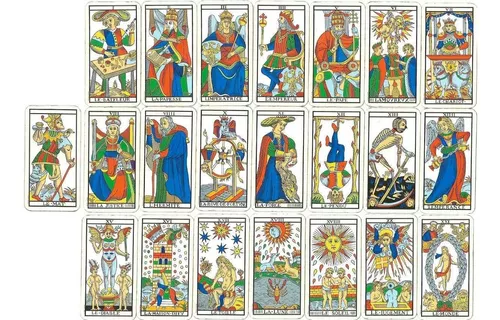

Arcanos Mayores
En el tarot, los arcanos mayores son una de las dos categorías principales de cartas, siendo la otra los arcanos menores. Los arcanos mayores constan de 22 cartas, cada una de las cuales representa conceptos y fuerzas universales. Estas cartas suelen tener un significado profundo y simbólico, y se utilizan para explorar cuestiones significativas en la vida, como el crecimiento personal, la transformación y los grandes cambios.
- El Loco
- El Mago
- La Papisa
- La Emperatriz
- El Emperador
- El Papa
- El Enamorado
- El Carro
- La Justicia
- El Ermitaño
- La Rueda de la Fortuna